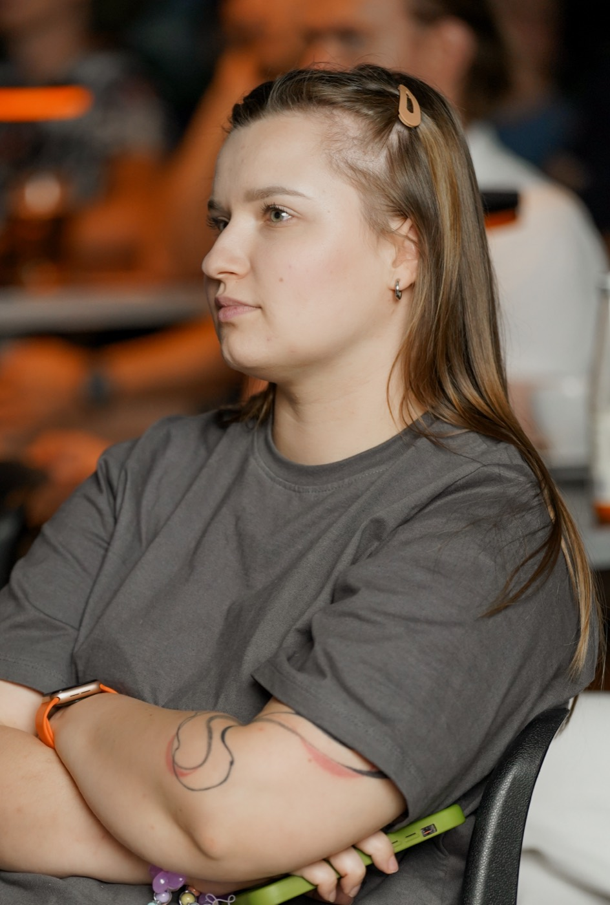

Шведська, яку ти починаєш використовувати в житті
Курси, матеріали й міні-уроки зі шведської для дорослих, які хочуть не просто «вчити мову», а говорити, розуміти й почуватися впевненіше у шведському середовищі.

Для кого Fika med Maria
Для українськомовних дорослих, які хочуть вчити шведську по-сучасному — через спілкування, культуру й систему.
Для тих, хто починає з нуля
Для тих, хто хоче нарешті заговорити
Для тих, хто планує життя або роботу у Швеції
Для тих, хто любить шведську культуру
Як я вчу шведської
Я не будую навчання навколо сухого правила. Ми беремо реальну тему, додаємо потрібну лексику, бачимо граматику в дії, говоримо, слухаємо й поступово збираємо шведську в систему.
Говоріння з перших занять
Ми не просто «проходимо тему» — вчимося говорити, розуміти, реагувати й використовувати шведську в реальному житті.
Граматика через приклади й контекст
Не зубримо правила заради правил. Вчимося бачити мовні патерни, щоб шведська ставала логічною й природною.
Лексика готовими фразами
Слова не живуть окремо. Тому вчимо не «слово — переклад», а фрази й готові мовні блоки, які можна одразу використовувати.
Культура як частина мови
Шведська — це не лише слова й граматика. Це ще й культура, традиції, побут і те, як шведи спілкуються між собою.
Матеріали, до яких хочеться повертатися
Власні добірки, пояснення й тексти, які допомагають тримати контакт зі шведською навіть між заняттями.
Курси шведської
Обери напрям, який потрібен тобі зараз — від першого слова до впевненого спілкування.
Безкоштовні матеріали для вивчення шведської
Почни з маленьких матеріалів: словники, міні-уроки, пояснення граматики та культурні нотатки, які допоможуть тримати контакт зі шведською навіть між заняттями.
Місячник зі шведської
Раз на місяць — маленький тематичний випуск зі шведської: текст, нові слова, культурний контекст і завдання. Для тих, хто хоче регулярно залишатися в мові без хаосу й перевантаження.
Тема місяця: Шведська осінь
- Текст шведською + переклад
- Словник теми
- Граматичний фокус
- Культурна нотатка
- Завдання й mini-test
Хто така Марія
Марія — викладачка шведської, яка поєднує мову, культуру, структуру й спілкування. Вона створює матеріали та курси для українськомовних дорослих, які хочуть вчити шведську тепло, сучасно й практично.
Тепла, але структурна. Пояснює складне просто. Будує навчання навколо реального спілкування — а не зубріння правил.
Дізнатись більшеЩо кажуть студенти
Тут зʼявляться справжні історії студентів. Поки що — місце, яке Марія заповнить реальними відгуками.
Готова почати свою шведську історію?
Почни з курсу, матеріалу або маленької fika у пошті.